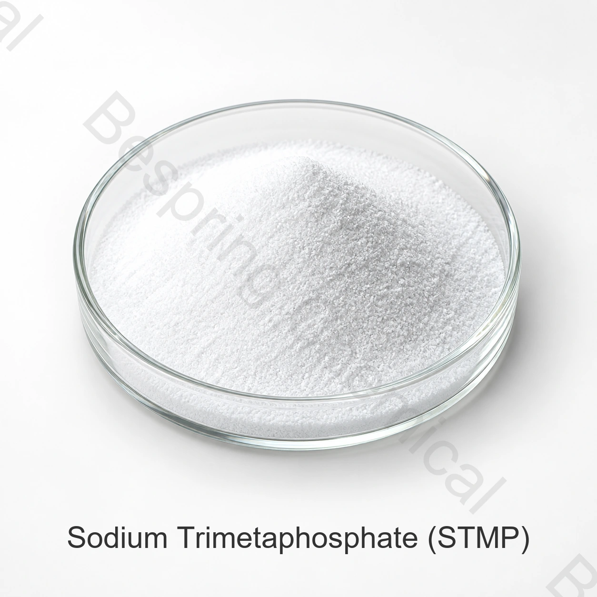

نظم الستارتش والنسيج
ويُستخدم هذا البرنامج في عمليات بحثية معدلة مختارة، ويمكن تقييمه للنص والوضوح واستقرار العمليات.
phosphate درجتي الأغذية · Sodium cyclic phosphate
إن تريميتافوسفات الصوديوم هو فوسفات الصوديوم التقلبي المستخدم في نظم غذائية مختارة من أجل تعديل النجوم، والتشتت، وإدارة المياه، واستقرار المنتجات.

نبذة عن المنتج
تريميتافوسفات الصوديوم في الصف الغذائي هو فوسفات مركّب مُركّب مُحدّد في الصحيفة المورّدة (نا نا)3(ص3)3، CAS 7785-84-4، بمحتوى مرجعي لا يقل عن 98.5%.
وتفصل هذه الصفحة المواصفات التجارية الموردة عن مراجع الهوية المستقلة، ويجب تأكيد الاستخدام القانوني والجرعة والتوثيق لسوق المقصد والتطبيق الدقيق للغذاء.
الأدوار الوظيفية
ويتوقف الأداء على الصف، والجرعة، والصياغة، وظروف العمليات، وقواعد الأغذية المنطبقة.
ويُستخدم هذا البرنامج في عمليات بحثية معدلة مختارة، ويمكن تقييمه للنص والوضوح واستقرار العمليات.
وتحدد المعلومات المقدمة عن التطبيقات مهام حيازة المياه، والتخفيف، والارتقاء، والتشتت، وتحقيق الاستقرار.
مجالات الاستخدام
وهذه المجالات هي مجالات فرز الطلبات، وليس الموافقة على الاستخدام العالمي أو النتائج المضمونة.
تستخدم كعامل فوسفات في تأهيل عمليات البحث المعدلة؛ وتؤكد الحدود المتبقية والمعايير الغذائية المنطبقة.
تقييم حيازة المياه، والسيطرة على الهزات، والتفاعلات المعدنية، واللون، واستقرار الفيتامينات في نظام الغضب الكامل.
افحص إدارة المياه، الترابط، التشتت والعائد تحت ظروف البروتين والملح والعملية الفعلية.
قد تدعم أهداف تحقيق الاستقرار بعد التحقق من التوافق مع البروتينات والمعادن والهيدروكولويدات وظروف التجميد.
تقييم التشت والتوازن المعدني واستقرار النسيج والتخزين في تركيبة الألبان المقصودة.
وتشير المعلومات المقدمة إلى انخفاض التحلل وإلغاء الفيتامين جيم؛ والتحقق من صحة هذه النتائج في اختبارات الرف.
البيانات التقنية المزودة
إن القيم الواردة أدناه تستنسخ ورقة المنتجات الموردة، وهي ليست بانتاجاً أو معياراً تنظيمياً عالمياً، وتؤكد المواصفات والأساليب الموقعة حالياً قبل الموافقة عليها.
| عنصر الاختبار | وحدة | المواصفة |
|---|---|---|
| محتوى تريميتا فوسفات الصوديوم | % | ≥98.5 |
| P2O5 المحتوى | % | ≥68.0 |
| زرنيخ (As) | % | ≤0.0003 |
| المعادن الثقيلة (كمقدار Pb) | % | ≤0.001 |
| الفلوريد (F) | % | ≤0.003 |
| الرصاص (Pb) | % | ≤0.0004 |
| 1% حل | — | 6.0–8.0 |
| المسألة المعزولة | % | ≤0.1 |
ملاحظة المواصفة: (ب) إن برنامج " ستب " هو فوسفات مزدحم، ولا ينبغي الخلط بينه وبين الفوسفات ثلاثي الصوديوم أو سداسيمتافوسفات الصوديوم.
دعم التأهيل
اطلب المواصفة/TDS الحالية، SDS، طرق الاختبار وشهادة التمثيل أو الدفعات.
(ب) طلب وثائق اللجنة الرفيعة المستوى المعنية بالبرامج، وكوشر، وهالال، والمنظمة الدولية لتوحيد المقاييس؛ والتحقق من المنتج والموقع والنطاق والصلاحية.
استعراض سجل صوديوم ترايميتافوسفات في نشر NIH PubChem لسياق الهوية
التخزين والمناولة
أسئلة المشتري
إن تريميتافوسفات الصوديوم هو فوسفات الصوديوم التقلبي المستخدم في نظم غذائية مختارة من أجل تعديل النجوم، والتشتت، وإدارة المياه، واستقرار المنتجات.
وتبيّن الصحيفة المورّدة أن نسبة مئوية قدرها 98.5 في المائة.
المرجع هو 25 كغ لكل كيس، 24 طن متري لكل حاوية بارتفاع 20 قدماً وطلب حد أدنى 500 كغ.
اطلب المواصفات/TDS، SDS، COA والمستندات المعمول بها مثل HACCP، كوشير، حلال وISO للمصدر الدقيق.
قدم نموذج الدرجة أو الترطيب، التطبيق، المواصفات، الكمية، التعبئة، الوجهة، المستندات وتاريخ التسليم.
استعراض تحريري: فريق التكنولوجيا والصادرات الكيميائية؛ آخر استعراض
الفوسفات الغذائية ذات الصلة
راجع الهوية، المواصفات، التطبيقات وتفاصيل المصادر لهذا الفوسفات الصالح للأغذية ذي الصلة.
راجع الهوية، المواصفات، التطبيقات وتفاصيل المصادر لهذا الفوسفات الصالح للأغذية ذي الصلة.
راجع الهوية، المواصفات، التطبيقات وتفاصيل المصادر لهذا الفوسفات الصالح للأغذية ذي الصلة.
توريد وفق المواصفات المتفق عليها
حدد التطبيق، المواصفات، الكمية، التعبئة، الوجهة والمستندات المطلوبة.